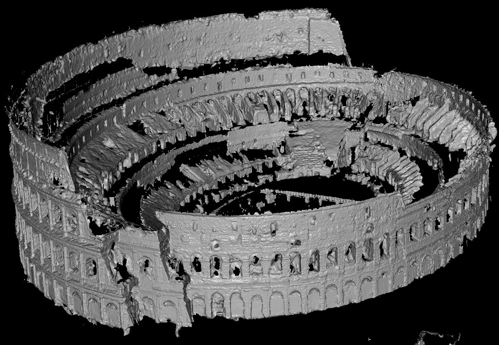

Was ist 3D Scanning?
3D Scanning Device
Triangulation Oberfläche bestimmen
Modell im 3-Dimensionalen
Point Cloud
Laser und optische Scanner
Mehr statt weniger
Vielfältig nutzbar
Triangulation?
Methoden der 3D-Scanner?
Laser Scanner
Displacement / Line Profile Device
Wie funktioniert es?
Geschwindinkeit ist bekannt
Reflektion bestimmt distanz zum Objekt

Pointclouds


Snapshot Devices
Ein gutes Beispiel für einen "Snapshot Scanner"
Wie funktioniert es?
123D Catch Video
Meshmixer
Anforderungen für das 3D-Scanning?
Scanner haben Probleme mit
Leuchtende Oberflächen
Spiegelnde Oberflächen
Transparente Oberflächen
Vermeiden von Blindspots
Kein natürliches Licht
Schatten zur orientierung
Wenig losgelöste Stellen
Videoausschnitt
Quellen
Stand 27.10.16
http://www.tcproject.net/pivotx/images/2013-04/cattura1.jpg , Statue in 123D Catch
http://2.bp.blogspot.com/-nUaubhMgVak/TxN6gXbzvYI/AAAAAAAAAg8/YWm1J9f9YVc/s400/123D+Software.png , Person in 123D Catch
http://libertycity.ru/uploads/download/gta4_modelling/fulls/1331980271_2012_03_17_12_15_27_1600x896.jpg , Brunnen in 123D Catch
http://ptgmedia.pearsoncmg.com/images/chap4_9780789753281/elementLinks/04fig01.jpg , 123D Catch Logo
https://www.youtube.com/watch?v=TTCiOoedUco , Video
Quellen
Stand 27.10.16
http://grail.cs.washington.edu/rome/col-sfm2.JPG , Pointcloud Colloseum
http://grail.cs.washington.edu/rome/col-mesh0.jpg , Mesh Colloseum